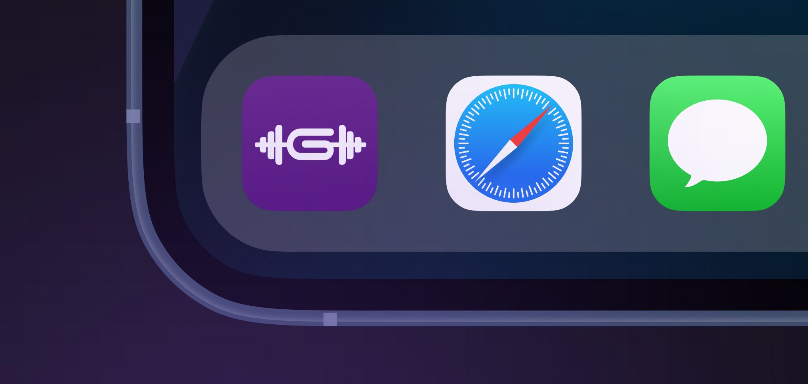
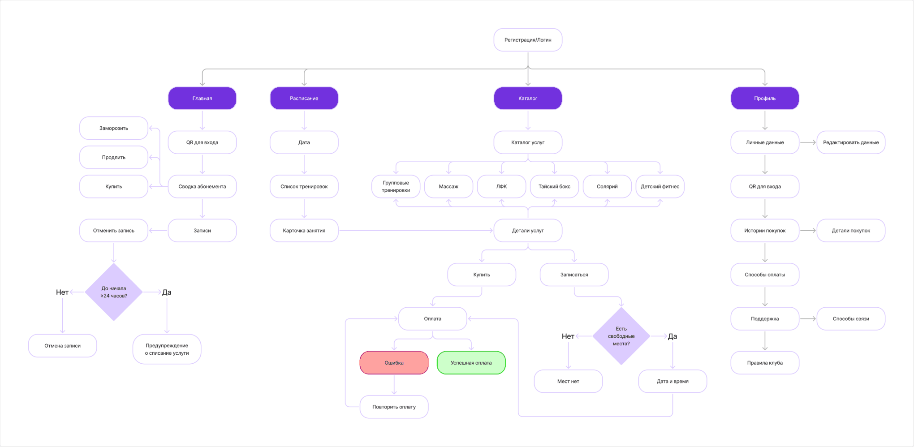
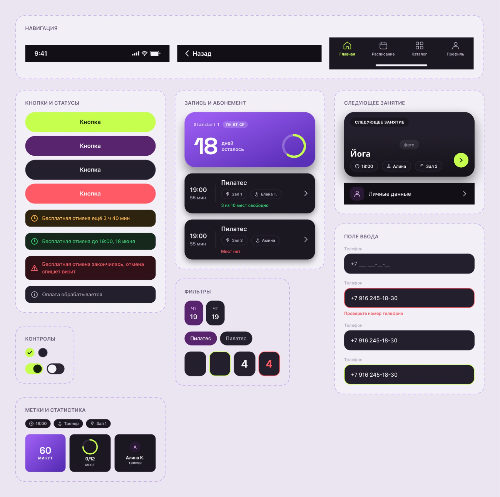
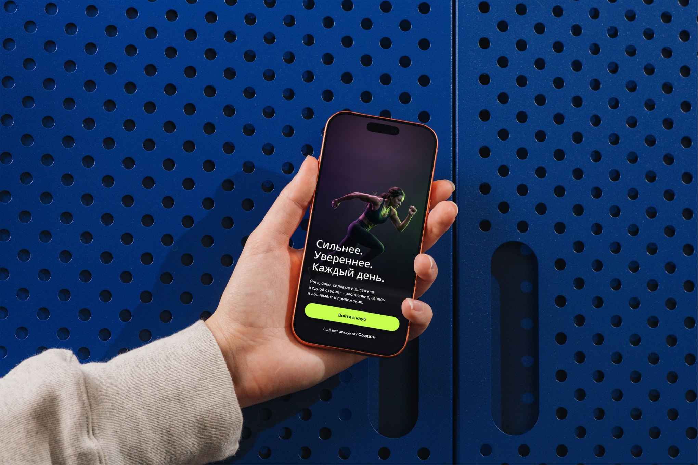
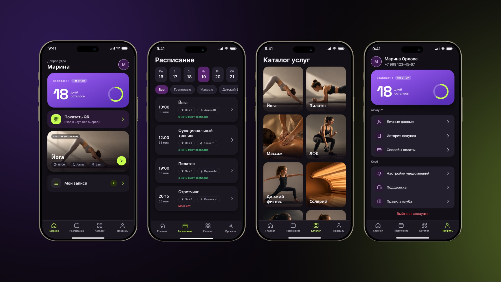
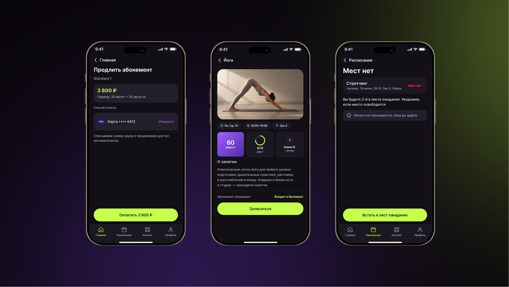

Gallaktica — приложение фитнес-клуба
Клиентка сама записывается на тренировки, покупает абонементы и проходит в клуб по QR. Приложение связывается с существующей CRM клуба, а не заменяет её.
Тип проекта
Реальный заказчик — фитнес-клуб, приостановлен
Моя роль
UX/UI‑дизайнер: бенчмарк, user stories, архитектура, продуктовые решения, UI экранов
Платформа
Мобильное приложение
Контекст
У клуба уже есть CRM, в которой живут клиенты, абонементы и посещения. Полностью менять её никто не будет — значит, приложение должно стать надстройкой, а не заменой. Отсюда и бизнес‑, и пользовательская проблема.
Проблема бизнеса
Запись и продажа абонементов идут через администратора: звонки, WhatsApp, инста. Это нагружает админов и отсеивает клиентов, которые не готовы ждать ответа вечером, когда группы уже заполнились. CRM остаётся, менять её нельзя.
Проблема пользователя
Нет единого места: остаток визитов — «спросить у администратора», отмена — неловкий разговор в мессенджере, вход — ожидание поиска в системе клуба.
Ключевое решение: запись ≠ визит. Запись — намерение, визит — факт. QR связан с приходом в клуб, а итоговое состояние должно подтверждаться через CRM.
Это определило архитектуру: приложение должно показывать понятные состояния, предупреждать о последствиях и не показывать «успех», пока действие не подтверждено системой‑источником.
Бенчмарк
Я сравнила несколько продуктов по конкретным механикам: запись, отмена, дедлайн, лист ожидания, QR‑вход, остаток и онлайн‑оплата. Анализ показал две полезные вещи для кейса: базовые сценарии уже хорошо знакомы пользователю, а ценность Gallaktica может быть не в количестве функций, а в прозрачности состояний — что покрывает абонемент, когда отмена ещё бесплатна и что произойдёт после действия.
User Story
Я сформулировала множество по ключевым разделам. В кейсе оставила семь, которые определяют основной пользовательский путь: запись, отмена, остаток, QR, покупка и понимание состояния.
Как клиентка, я хочу отменить запись быстро и сразу увидеть, что визит не списан, чтобы не терять оплаченное занятие из‑за чужой задержки.
Как клиентка, я хочу видеть остаток визитов и срок, чтобы не спрашивать об этом вслух каждый раз.
Как клиентка, я хочу пройти в клуб по QR, чтобы не стоять в очереди и не опаздывать на разминку.
Как клиентка, я хочу купить абонемент в приложении, чтобы не ехать в клуб ради оформления.
Как клиентка, я хочу записаться за пару тапов и сразу знать, что место моё, чтобы не ждать ответа вечером.
Как клиентка, я хочу понимать, за что списан визит, чтобы не спорить на ресепшене.
Как клиентка, я хочу успеть отменить до дедлайна, а для этого узнать о нём заранее, а не в момент списания.
Особое внимание — отмене: здесь недостаточно кнопки «Отменить». Нужно разделить состояние «успевает без списания» и «дедлайн прошёл» и сообщить последствие до подтверждения действия.
Архитектура
Выстроила структуру приложения вокруг ключевых сценариев пользователя — от поиска занятия и покупки услуги до записи, посещения и управления абонементом.

Ключевые продуктовые решения
Приложение — доп. инструмент CRM, а не замена
Приложение забирает рутинные действия, а CRM и администратор остаются источником правды для статусов, денег и исключений.
Запись ≠ визит
Намерение и факт — разные объекты. Поэтому QR фиксирует визит, а запись закрывается только после синхронизации с CRM.
Один остаток и история с причиной
Цифра одна на весь продукт, рядом — за что и когда списали. Вопрос «а за что?» исчезает сам.
Карточка занятия отвечает до записи
Уровень, длительность, тренер, что взять, покрывает ли абонемент этот день. Иначе новичок узнаёт правду на ресепшене.
Правило 24 часов превращается в понятный дедлайн
Клуб и так предупреждает. Показывать надо не правило, а остаток времени: «отменить без списания можно ещё 3 ч 40 мин».
Отмена — без переписки
Кнопка и таймер там, где клиентка бывает каждый день, а напоминание — ровно за сутки, пока отмена ещё бесплатна.
Экраны
Раньше клиентки клуба записывались, отменяли и узнавали остаток визитов через администратора в WhatsApp. Пока ждали ответа, срок бесплатной отмены иногда истекал, и визит сгорал.
Я собрала экраны так, чтобы ответы на эти вопросы были на виду. На главной — «7 из 14 визитов», QR для входа и ближайшее занятие с янтарной плашкой «Бесплатная отмена ещё 3 ч 40 мин». В расписании свободные места подсвечены зелёным, а «Мест нет» — красным, так что не надо открывать каждое занятие. В карточке занятия три проверки стоят прямо над кнопкой: день входит в абонемент, спишется один визит, отменить бесплатно можно до 19:00 18 июня. Правило клуба перестало быть строчкой в договоре и стало частью интерфейса.




Метрики и что будет проверяться
Главные блокеры — интеграция с CRM и правила изменения остатка: возвращается ли визит автоматически, создаётся ли заявка или требуется подтверждение администратора. От этого зависит конкретный happy path и статус после действия.
Продуктовые метрики — доля ключевых действий, которые клиентка завершает без администратора.
Self-service
completion
Доля записей и отмен, завершённых без участия администратора
Нагрузка
на ресепшен
Количество обращений по записи, отмене и остатку
Успешность
отмены
Доля отмен без ошибок и без лишнего контакта с ресепшеном
QR check-in
adoption
Доля входов через QR от общего числа посещений
Итог
Проект про то, что весь клиентский путь в фитнес‑клубе можно отдать в телефон клиентки, оставив человеку решения: приём денег, офлайн‑услуги и спорные случаи.
Что я решила:
1. Убрала зависимость от администратора
Запись, отмена, остаток и QR перенесены в самостоятельный сценарий.
2. Сделала правила частью интерфейса
Дедлайн отображается как конкретное время, а последствия показываются до действия.
3. Сохранила CRM источником истины
Приложение не дублирует бизнес‑логику клуба, а выступает инструментом.